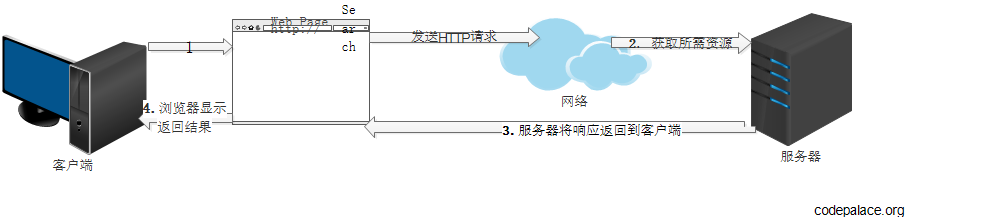

1. 什么是 Web
Web 是一种基于超文本方式工作的信息系统。常具有以下三个特征。
- Web 使用超文本技术的 HTML 来表示信息资源以及建立资源与资源之间的链接。
- Web 使用统一资源定位器（Uniform Resource Locator，URL）定位 Web 服务器中信息资源的位置。
- Web 使用 HTTP 协议定义客户端与 Web 服务器之间的通信。
2. Web 工作原理

3. Java Web 开发工具
- JDK
- Web 容器： 支持 JSP、Servlet 等技术的 Web 服务软件，称为 Web 容器。如 tomcat。将安装 Web 容器的计算机称为 Web 服务器。
- 数据库
- 集成开发环境，如 Eclipse
4. servelet 技术
4.1 本质介绍
servlet 技术是Java Web开发技术之一。Server Applet 的缩写。Servlet 是由服务器调用和执行的 Java 类，是小型的和平台无关的Java类，他被用来扩展服务器的性能。Servlet 被编译成体系结构中立的字节码，由基于 Java 的 Web 服务器动态加载和执行。Servlet 通过容器实现的 request 和 response 实例和客户端交互。Servelet 的主要功能在于交互式的浏览和修改数据，生成动态 Web 内容。通常用于处理客户端发送过来的请求，并根据请求内容返回相应的响应。
4.2 生命周期
- 客户端第一次请求Servlet时，Servlet 被加载到内存，容器会创建这个 Servlet 的实例，并调用其 init() 方法进行初始化工作。
- 容器创建请求对象和响应对象，然后调用 Servlet 的 service() 方法为客户端提供服务。
- 当 Servlet 不再被需要时，容器调用 Servlet 的 destroy() 方法将Servlet 实例销毁。
5. JSP 技术
JSP 技术是 Java Web 开发技术之一，Servlet 技术是其前身。Java Server Pages缩写，指的是基于 Java 的服务器端动态网页。JSP 是在 HTML 页面中加入JSP 的标记、Java 脚本、指令和动作等元素，并通过 Web 容器运行的一种表示层技术。
Web 服务器总是把每个被访问的 JSP 文件先翻译成对应的 Servlet，然后再编译执行。
6. Struts 框架介绍
Struts 是基于 MVC 的 Web 框架。Struts 把 Servlet 、JSP 和自定义标签等元素整合到统一的框架中，使得开发人员不用设计和编写整套的 MVC 框架代码，大大节省了应用开发的时间。
Reference
- Java Web 开发技术教程（第二版）
请多多指教